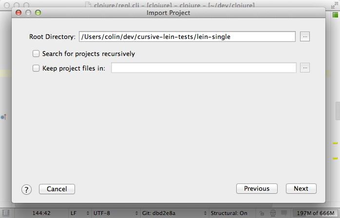
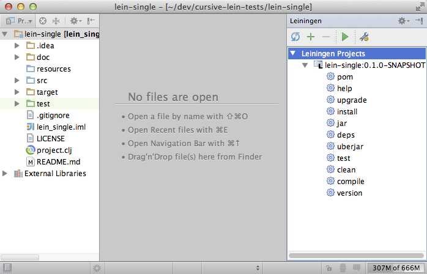
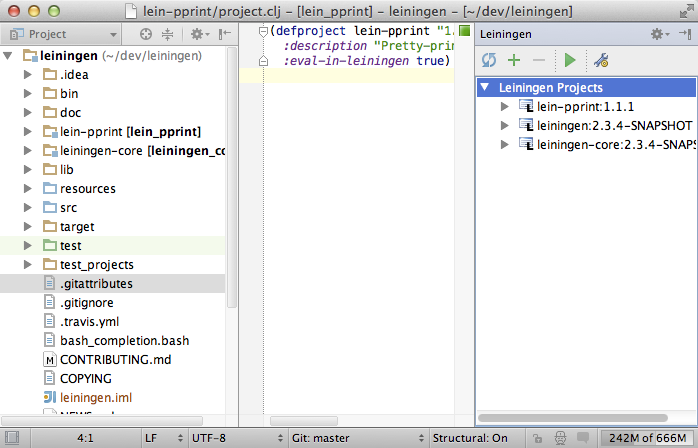

Leiningen を使う¶
Leiningen は Clojure のためのデファクトなプロジェクト管理ツールです。 Cursive は Leiningen を使ってプロジェクトのビルドと管理をサポートしてくれます。将来的には今よりも多くの機能が提供される予定です。
既存のプロジェクトをインポートする¶
File -> New -> Project from Existing Sources… [1] を選択してインポートしたいプロジェクトを選択します。 project.clj かそれを含むディレクトリが選択できます。

もし要求されたら Import project from external model と Leiningen を選択します [2] 。
プロジェクトのルートディレクトリは埋めてあります。このディレクトリを他のプロジェクトのために再帰的に検索するかを選ぶことができ [3] 、それからプロジェクトファイルをメインプロジェクトのディレクトリ以外に置くかも選ぶことができます。
Leiningen プロジェクトの一覧が表示されるので、どれをインポートするかを選択できます。

SDK をひとつ選び、プロジェクトの名前とファイルロケーションを確認します。

プロジェクトを開いた画面になり、これで使う準備が出来ました。

Leiningen プロジェクトを使う¶
Leiningen ツールウィンドウでは現在アクティブになっている Leiningen プロジェクトを表示し、とても一般的なタスクの一覧を表示しています。
カミングスーン: プラグインから提供されるタスクをプロジェクトから読み取れるようにします。
タスクを選択し、ツールウィンドウのツールバーにある  を押すことでタスクを実行できます。
を押すことでタスクを実行できます。

 と
と  アイコンを使うことで Leiningen プロジェクトを IntelliJ プロジェクトに追加したり削除することができます。
アイコンを使うことで Leiningen プロジェクトを IntelliJ プロジェクトに追加したり削除することができます。
Leiningen の依存性を再読み込みする¶
project.clj を更新したら  を押すことでプロジェクトファイルをリロードし、プロジェクトの依存性を再読み込みします。 Maven プラグインのように自動では行われないことに注意してください。実行設定 [4] の Before Launch セクションに
を押すことでプロジェクトファイルをリロードし、プロジェクトの依存性を再読み込みします。 Maven プラグインのように自動では行われないことに注意してください。実行設定 [4] の Before Launch セクションに Synchronize Leiningen Projects を追加して REPL 起動前にプロジェクトを再読み込みするようにしてもいいかもしれません。
Leiningen の依存性のためのソースと Javadoc¶
Cursive 0.1.12 から Leiningen の依存性のためにソースと Javadoc をダウンロード出来るようになりました。 Java のクラスファイルにナビゲートされるときにソースが存在しない場合、ソースをダウンロードするか尋ねられます。ソースと Javadoc を Leiningen プロジェクトで自動的にダウンロードすることもできますが、プロジェクトの同期が非常に遅くなるためこのオプションはオススメしていません。ほとんどの Clojure ライブラリはソースと分離されていて、ソースアーティファクトを持っていないためです。もし本当にあなたがそれを必要なら設定でコントロールすることができます。 Settings -> Leiningen -> Automatically download sources/javadocs [5] 。
クイックプロジェクトインポート¶
シンプルなプロジェクトの場合、明示的にインポートする必要はありません。いつも通り File -> Open… と開き project.clj かそれを含んでいるディレクトリを選択すれば自動的にインポートされます。
Leiningen を使って新しいプロジェクトを作る¶
近い将来実装予定。
現在はコマンドラインから lein コマンドを使ってプロジェクトを作り上で説明したようにインポートしてください。
マルチモジュールプロジェクトを扱う¶
もしあなたがもっと複数のモジュールをもつ複雑なプロジェクトを持っている場合、 Cursive は自動的にそれを見つけすべて整えてくれます。インポートするときに Search for projects recursively にチェックしてください。

インポートしたいプロジェクトをリストの中から選択します。プロジェクト内での場所がアーティファクトの詳細に沿って表示されています。

そしたらプロジェクトがセットアップされます。 IntelliJ モジュールが各 Leiningen モジュールに対して作られ、それらの依存性も適切にセットアップされます。
新しいモジュールを追加するには Leiningen ツールウィンドウの ボタンかプロジェクトツールウィンドウのコンテキストメニューが使えます。プロジェクトから Leiningen モジュールを削除するには Leiningen ツールウィンドウの ボタンを使います。
Checkout Dependencies¶
マルチモジュールプロジェクトの管理には Leiningen の基本的な仕組みである Checkout Dependencies が使えます。 Cursive は checkout dependencies をサポートしており、適切なモジュールと依存性を自動的に追加します。
| [1] | File メニューにない場合はアクションを検索して Import Project を探します。 |
| [2] | project.clj がないディレクトリをインポートするとき |
| [3] | マルチモジュールプロジェクトを扱う を参照 |
| [4] | Run -> Edit Cofigurations... から。詳細は REPL のセクションで扱います。 |
| [5] | 現在( cursive 0.1.54 )ではこの設定が見当たりませんが、上述の通りクラスファイルを開いたタイミングでソースをダウンロードすることは可能です。 |